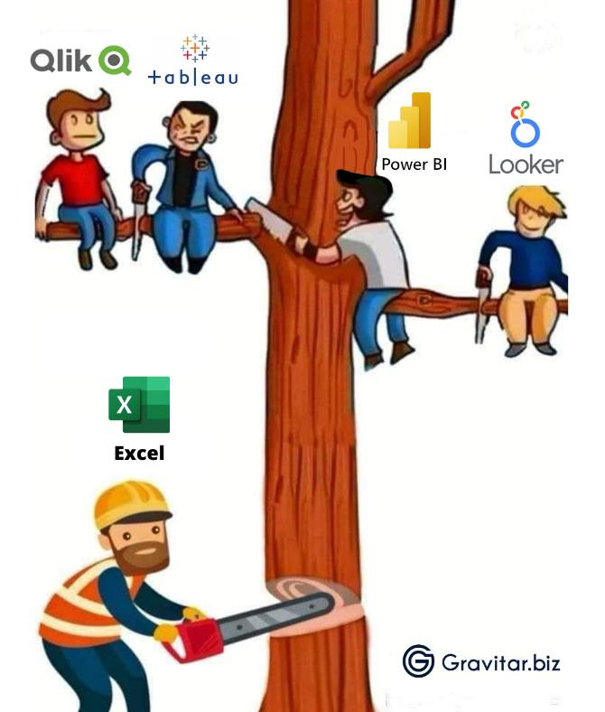
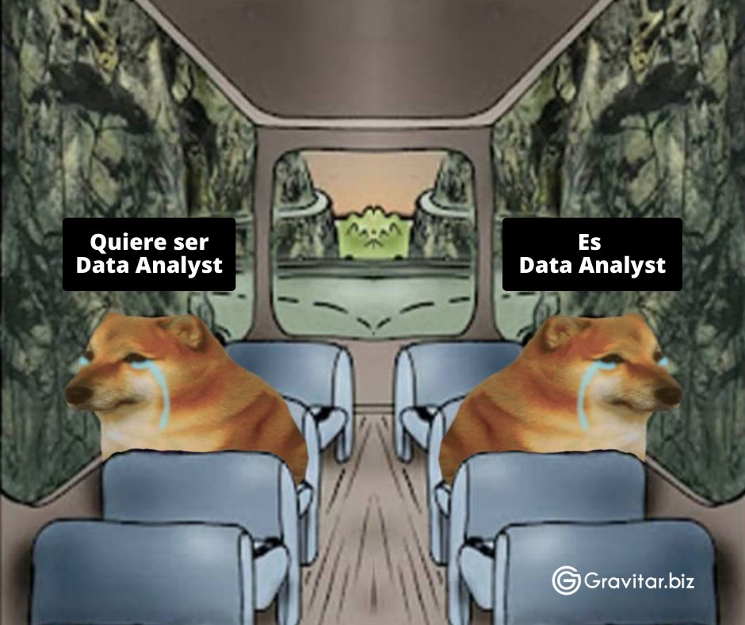

Clase_3
Sílabo: clase 3 La importancia del análisis de datos (Conceptual)
Conceptos clave para el análisis efectivo de datos.
Iniciativas para abordar el temas sociales utilizando Python, como el uso de módulos como pandas em investigación académica.
¿Qué es el análisis de datos?
Si bien existen varias definiciones de este tema, todas llevan a un mismo lado,por tanto diremos que es un proceso de examinar, transformar, limpiar datos para obtener conclusiones con los mismos. En el mismo se involucran varias técnicas estadísticas para determinar relaciones, dependecia y demás entre conjutos de datos. El mismo es ampliamente usado en investigación académica, estudios de mercadotecnia, decisiones en recursos humanos, etc.
¿Cómo se realiza el análisis de datos?
No existe una receta establecida para generar este análisis pero podemos decir que se siguen los siguientes pasos:
- Definir la razón del análisis, qué preguntas queremos responder, debemos tratar de ser precisos.
- Qué es lo que mediremos y cómo lo haremos. Ejemplo: Si queremos medir los objetos más vendidos podemos ver como las personas se informaron sobre el mismo, por qué plataforma lo adquieieron, etc.
- Obtención de datos y su organización. - Clasificación y análisis de datos.
- Interpretación de resultados.
Tipos de análisis de datos
De acuerdo al tipo de datos quer vayamos a analizar podemos tener: análisis cualitativo y cuantitativo.
- Cualitativo: Aquí analizamos información no numérica (críticas, opiniones, creeencias, etc.), respondemos preguntas del tipo ¿Cómo? ¿Por qué?
- Cuantitativo: Se analiza información cuantificable.
Herramientas para el análisis de datos
Con el auge que esta teniendo el análisis de datos últimamente existen varias herramientas para realizar el mismo, entre las cuales vale nombrar:
- Power BI
- R
- Python
- Tableau
- Excel
- SQL
- Qlik
Cabe mencionar que existen diferencias entre ellas, ya sea que uno sepa fundamentos de programación o no, por ello se debe entender que el análissi de datos es un conjunto de procesos que llevan a un objetivo. En este curso usaremos Python pero es recomendable conocer un poco de las herramientas antes mencionadas.

Análisis de datos en la vida real
Existen varios ejemplos de cómo se ha aplicado el análisis de datos en el día a día, aquí mostramos algunos de ellos.
BBVA y la Navidad
Resumiendo, se deseaba determinar en qué gastaban más su dinero los clientes en la época navideña, pues cómo sabemos, es una época en la que los gastos suben. Se puede leer esta investigación en su página siguiendo el siguiente enlace: https://www.bbva.com/es/navidata-gastado-dinero-esta-navidad/
Inditex y videojuegos
La empresa busco a una compañia de videojuegos para que les ayuden en el análisis de datos para así no quedarse atrás. Se puede leer el artículo completo aquí: https://www.lavozdegalicia.es/noticia/galicia-economica/2020/03/01/inditex-ficha-experta-videojuegos-explotar-mina-oro-big-data/00031583073737230198202.htm
Existen muchas más historias relacionadas al análisis de datos, aunque no es fácil llegar a ser considerado un “analista de datos”, con dedicación se puede lograr mucho en este campo que esta emergiendo rápidamente.

Python y sus usos en la sociedad
Como sabemos Python es un lenguaje muy usado en la actualidad, el mismo puede ser aplicado a muchos campos. Si entramos a temas sociales Python puede ser usado en:
- Análisis de datos
- Investigación social y académica
- Visualizar datos
- Procesamiento de lenguaje natural
- Desarrollo de aplicaciones
- Análisis en redes sociales
Por lo que Python es una herramienta escencial al momento de querer realizar análisis de datos, nos facilita la comprensión y nos da una forma de abordar los poblemas.
Historias de éxito con Python
La pergunta que todos se hacen es: ¿sirve Python en el mundo real? La respuesta es sí, muchos avances se han logrado con este lenguaje, es por ello que hemos puesto aquí algunos de ellos.
Caso de Gusto.com
Empezó como un sitio de viajes en línea llamado EZTrip.com, evolucionó para ofrecer servicios de reserva y también se diversificó con contenido de reseñas de viajes, blogs y fotos. La compañía utiliza sistemas de reserva en línea y se enfrenta a desafíos al integrar sistemas antiguos basados en mainframes y sistemas más modernos mediante técnicas como “screen scraping”. Han adoptado Python para facilitar la integración y mejorar la eficiencia en tareas diarias.
Los sistemas de reserva basados en mainframes presentan limitaciones en la entrada de datos y formatos, lo que hace que el uso de Python sea crucial en tareas como procesamiento de texto, limpieza de datos y desarrollo rápido. Python ha sido fundamental en la construcción de una red social para viajeros y en la transición hacia un modelo de contenido generado por usuarios.
Gusto.com utiliza Python para procesar grandes conjuntos de datos de manera eficiente, como en la creación de un sistema de localización para descripciones de hoteles. Python también ha sido efectivo en la integración de servicios web de proveedores, y se ha destacado por su capacidad de desarrollo rápido y sus herramientas de procesamiento de XML.
La elección de Python se basó en su portabilidad, acceso al código fuente, capacidad de integración, desarrollo rápido, soporte para optimización selectiva, scriptabilidad y facilidad de aprendizaje. Además, la comunidad de Python y la independencia del sistema operativo han sido aspectos beneficiosos para Gusto.com. Python ha demostrado ser una herramienta clave en el éxito y crecimiento de Gusto.com en el espacio de viajes en línea.
Puedes leer el artículo completo en: https://www.python.org/about/success/gusto/
Strakt y Python
Strakt, ha tenido éxito con el proyecto CAPS (Collaborative Approach to Problem Solving). Este proyecto, ofrece soluciones modulares de colaboración y flujos de trabajo, utilizando Python como lenguaje principal.
Python fue elegido por su portabilidad, acceso al código fuente, capacidad de integración con sistemas existentes, desarrollo rápido, soporte para optimización selectiva, scriptabilidad y por ser fácil de aprender. A pesar de ser nuevos en Python, los desarrolladores de Strakt encontraron que el lenguaje era fácil de aprender y aumentaba la productividad. Python también influyó positivamente en el proceso de diseño y facilitó las revisiones de código.
El proyecto CAPS fue exitoso, y la implementación se desplegó en una universidad sueca como cliente beta. La elección de Python ha sido fundamental para el éxito de Strakt en el desarrollo de soluciones colaborativas y de flujo de trabajo.
Se puede encontrar el resumen completo en: https://www.python.org/about/success/strakt/
Como podemos observar el uso de Python es diverso, pero ahora entremos en el uso de la librería pandas. Veamos esta divertida forma de aprender su uso